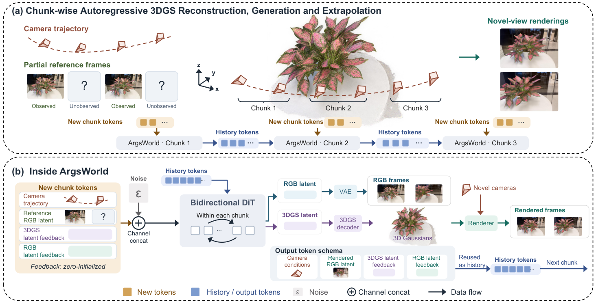
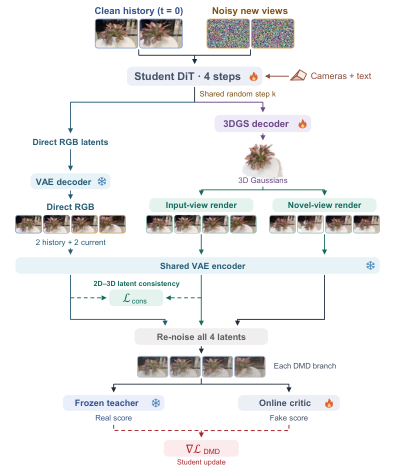
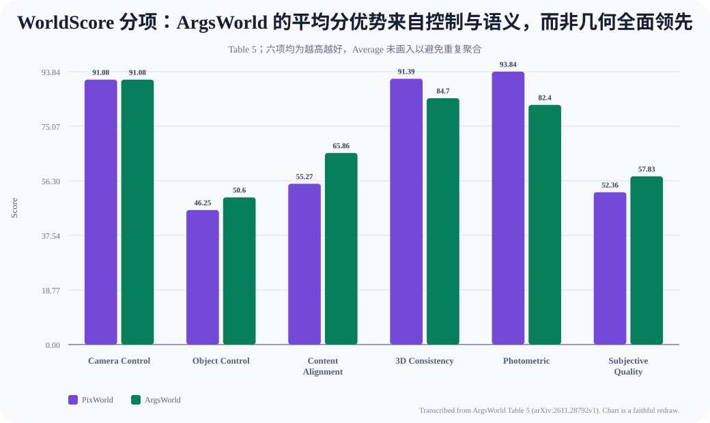
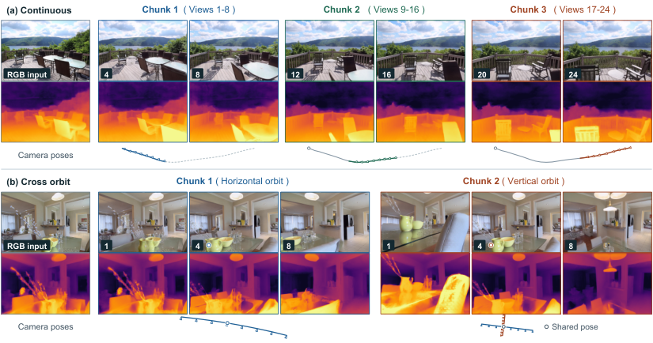

核心结论
方法脉络
关键证据
1. 这篇工作真正解决的缺口
现有 autoregressive video world model 可以继续生成画面，但通常没有可复用的显式 3D asset；现有 feed-forward 3DGS 方法能重建或生成一组视图，却很难让同一个场景表示在后续相机查询中持续修订与扩展。
ArgsWorld 把输入统一成：一串有标定的 camera poses、可选 posed reference images、可选 text prompt。输出统一成：沿这些相机得到的 direct RGB views，以及同一时刻可从额外相机渲染的 explicit 3D Gaussian scene。多张 reference images 对应 reconstruction；一张图或文本对应 generation；继续输入新的 camera segment 对应 extrapolation。
最关键的状态设计是 外观历史固定、场景特征可改写。前一 chunk 的 final direct RGB latents 被当作 timestep 0 的 clean history，避免后续步骤改坏已经承诺的外观；但 DiT 会对当前前缀内全部 views 做 bidirectional attention，并刷新历史 view features，再让 Gaussian decoder 重新构建整个 scene prefix。这样新视角揭露遮挡区域时，几何可以回溯修正，而不必把旧图也重新采样。
这也解释了 ArgsWorld 与普通 video-to-3D pipeline 的区别：它不是先生成完整视频、再一次性 reconstruction；3DGS render latent 在每个 denoising step 内都反馈回 DiT，场景表示本身参与后续生成。

2. 模型结构：Wan latent 生成器与显式 3DGS 解码器如何接起来
ArgsWorld 不是纯 3D token model，也不是 pixel-space diffusion；它仍在 Wan VAE latent 中生成图像，同时从 DiT 的高维 view features 解码 3D Gaussians。
- Backbone： camera-conditioned Wan2.2-TI2V-5B，30 个 Transformer blocks、24 个 attention heads；初始化来自 FlashWorld 的 3D-adapted checkpoint。
- 每视图编码： 冻结 Wan VAE，移除 temporal padding，每张图独立编码为 48-channel spatial latent；480×704 输入经 16× spatial downsampling 与 2×2 patchification 后为 330 tokens/view。
- 条件输入： noisy RGB latent、6-channel camera ray map、48-channel reference latent、1024-channel feedback features、48-channel render-latent feedback，共 1174 input channels；文本经 frozen UMT5 cross-attention。
- 双输出： DiT 预测 48-channel flow velocity 与每视图 1024-channel features；direct RGB 由 clean latent 经 VAE decoder 得到，显式几何由独立 Gaussian decoder 得到。
- Gaussian decoder： trainable Wan VAE decoder copy + feature injection + pixel-aligned head；每个输出位置预测两个 Gaussians，包括 ray offset/depth、opacity、anisotropic scale、rotation 与 degree-2 spherical harmonics。
- 状态延续： 每个 chunk 用 4 个 noise levels 完成采样；final direct latents 与 refreshed features 进入下一 chunk，final Gaussians 用于额外 view rendering。
它仍然是 latent world model
3. 3D Self-Forcing Distillation：为什么需要在自己的错误历史上训练
自回归模型训练时若只看 ground-truth history，推理时一旦前一 chunk 有误差，后续 context 分布就发生偏移；ArgsWorld 让 student 完整跑出自己的 history，再只重放一个共享 denoising step 做梯度更新。
每个训练 rollout 含 2–5 个八视图 chunk。模型先在无梯度模式下完成每个 chunk 的四步采样，把自身生成结果作为下一 chunk 的 clean history；随后随机选择一个 shared step，在所有 chunks 中用 cached inputs 重放并反传。这与推理时的 context 分布更一致。
监督不是只有 direct RGB branch。论文把 DMD 同时作用于三处：① 所有 chunk 的 direct RGB latents；② final scene 在 rollout cameras 上的 render latents；③ final scene 在额外 novel cameras 上的 render latents。后两支经 differentiable rendering 与 frozen VAE encoder 把梯度传到 Gaussian decoder。input-view rendering 还通过 latent consistency 对齐 clean history。
训练混合 posed multi-view sequences 与 single-view images，比例 2:1；多视图来自 DL3DV-10K、RealEstate10K、ACID、SpatialVID，单图来自 Echo-4o-Image 并配 WildRGB-D camera trajectories。模型在 8 GPUs、480×704 上训练，论文报告 checkpoint 位于 4,200 global steps；这是从 FlashWorld/Wan 初始化后的 post-training，不是从零预训练。

4. 实验结果：强在哪里，哪些地方并没有全面赢
论文的“跨任务 SOTA”更准确地理解为：ArgsWorld 在多项协议的主指标或综合平均上领先，但 explicit geometry、感知质量和速度存在清晰 trade-off。
WorldScore 最值得拆开看：ArgsWorld 与 PixWorld 的 camera control 同为 91.08；ArgsWorld 在 object control、content alignment、subjective quality 更高，但 3D consistency 为 84.70（PixWorld 91.39），photometric consistency 为 82.40（PixWorld 93.84）。因此平均分领先更多来自控制与语义，而不是显式几何全面领先。
速度对比也不是绝对优势。论文在 RTX 6000D 上把 Gaussian rendering 纳入 ArgsWorld/FlashWorld/PixWorld 时间，但排除 model loading 与 output writes。ArgsWorld 的 8-view generation 为 2.28s，快于 FlashWorld 2.55s，却慢于 PixWorld 1.37s；两 chunk extrapolation 为 6.91s，也慢于 PixWorld 3.04s 与 FlashWorld 4.96s。
| 任务 | ArgsWorld | 最强对照/反例 | 解读 |
|---|---|---|---|
| 4-view reconstruction | PSNR 20.68 / SSIM 0.657 / LPIPS 0.121 | MVSplat SSIM 0.659 | PSNR、LPIPS 最优；SSIM 极小幅第二 |
| 8-view reconstruction | 21.31 / 0.694 / 0.117 | PixWorld 22.53 / 0.708 / 0.121 | ArgsWorld LPIPS 最优，但 PSNR/SSIM 不及 PixWorld |
| 8-view single-image generation | 11.6104 / 0.3054 / 0.5939，2.28s | FlashWorld LPIPS 0.5834；PixWorld 1.37s | PSNR/SSIM 最优；不是最感知相似也不是最快 |
| 16-view extrapolation | 11.8344 / 0.3140 / 0.5910，6.91s | FlashWorld LPIPS 0.5620；PixWorld 3.04s | PSNR/SSIM 最优，但速度和 LPIPS 有代价 |
| T3Bench-200 text generation | 五项中四项第一；CLIPScore 33.10 | FlashWorld aesthetic 4.94 vs 4.93 | 文本对齐与多数 2D 质量指标强；没有单独 3D 几何指标 |
| WorldScore static split | Average 72.08 | PixWorld 71.70 | 综合平均最高仅 +0.38；分项结构差异大 |


5. 消融真正证明了什么
render-space DMD 的价值证据较干净；“双向 attention 必要”的证据很强，但其消融同时冻结了历史 features，不能把全部收益只归因于 attention mask。
- 加入 input-view 与 novel-view rendering DMD 后，generation PSNR +0.79 dB、LPIPS -0.0444；extrapolation PSNR +1.16 dB、LPIPS -0.0574，支持显式 render supervision 对 Gaussian scene 有实质帮助。
- 但 generation SSIM 从 RGB-only 的 0.3152 降到 full 的 0.3054，说明 full model 并非在所有指标上单调改善；论文只明确声称 extrapolation 三项全部改善。
- causal variant 的 PSNR 大幅下降 3.51/2.94 dB，不过它同时使用 causal masking 并冻结历史 Gaussian-decoding features。因此该实验支持“允许历史 scene features 被更新很重要”，却不能独立量化 bidirectional attention 本身贡献多少。
| 设置 | 8-view generation PSNR / SSIM / LPIPS | 16-view extrapolation PSNR / SSIM / LPIPS |
|---|---|---|
| Full ArgsWorld | 11.6104 / 0.3054 / 0.5939 | 11.8344 / 0.3140 / 0.5910 |
| Direct RGB DMD only | 10.8163 / 0.3152 / 0.6383 | 10.6788 / 0.3121 / 0.6484 |
| Causal attention + frozen historical features | 8.0975 / 0.1377 / 0.6538 | 8.8900 / 0.1773 / 0.6485 |
6. 与 FlashWorld、PixWorld、BiWM 的关系：创新是闭环整合
ArgsWorld 的组件大多有直接前身；新意在于把显式 Gaussian scene、chunk-wise bidirectional autoregression 与 self-generated-history distillation 统一到一个可继续的 session state。
我的技术判断
| 工作 | 生成空间/输出 | 能否持续扩展 | ArgsWorld 相对增量 |
|---|---|---|---|
| FlashWorld | Wan latent + direct 3DGS；单图/文本生成 | 论文将 autoregressive generation 列为 future work | 直接继承其 3D-adapted/few-step checkpoints，并增加 clean-history rollout、feature refresh 与跨 chunk state |
| PixWorld | pixel-space diffusion + pixel-aligned 3DGS；reconstruction/generation 一体 | 单次前馈/采样为主，不解决 successive camera chunks | 牺牲纯 pixel-space，换取 Wan prior 与 autoregressive extrapolation；综合控制/语义更强但 consistency/速度未全面胜出 |
| BiWM | chunk-wise bidirectional RGB/video world model | 可自回归，但输出仍主要是视频 | 增加 explicit 3DGS decoder、render feedback、input/novel-view DMD，使世界状态可渲染与导出 |
| Feed-forward splat 方法 | posed images → 3DGS | 通常不生成未知内容 | 同一个模型同时承担 reconstruction、generation 与 camera-guided extrapolation |
7. 局限、复现与实际可用性
代码与 checkpoint 已公开到可跑 inference 的程度，但论文对“open-ended”、训练/评测 split、长期内存增长与真实机器人闭环仍缺少充分验证。
仓库主分支在本次调研时指向 commit 5984f2fd67cd21c303121068533bf1b1e1ebb45a。README 给出 reconstruction/generation/extrapolation 三种推理命令；infer_ar.py 还暴露 --save_session、--resume_session、--query_json、PLY/SPZ export。公开 README 主要覆盖 inference，未提供与论文 4,200-step self-forcing 训练相对应的完整复现说明。
Hugging Face weights 链接已由项目页和 README 公布；本环境访问 Hugging Face 超时，因此本次没有现场下载 checkpoint 或执行 GPU 推理，不能把“仓库接口存在”写成“权重已在本机验证可运行”。
- 长度验证有限。 训练为 2–5×8 views；论文 generation/extrapolation 主协议为 8/16 views，最长定性图为 3×8=24 views。“Open-ended”表示接口可继续追加 chunk，不等于已经验证数百视图无漂移或无显存增长。
- 静态、已标定 camera world model。 输入要求 OpenGL camera-to-world pose 与 intrinsics；它建模相机探索下的静态 3D scene，不是带 agent action、物理状态转移或动态物体的交互式世界模拟器。
- WorldScore trade-off 明显。 综合平均第一，但 3D/photometric consistency 低于 PixWorld；如果主要目标是稳定几何 asset，不能只看 Average。
- 文本评测偏 2D。 T3Bench 使用 IQA/aesthetic/CLIPScore，没有单独测 text-conditioned 3D geometry correctness。
- 评测 split 说明不足。 v1 明确训练使用 curated DL3DV-10K，也说明 DL3DV-200 来自 DL3DV-10K，但实验段没有明确写出这 200 个 scenes 是否与训练子集严格 disjoint；应由作者或发布 split 进一步确认，不能据此直接断言泄漏。
- 公开实现的默认规模高于论文主协议。 README /
infer_ar.py默认 480×704、24 views/chunk，并演示 24/48-view session continuation；论文核心量化主要基于 8-view chunks，代码默认规模的质量与资源曲线没有同等表格证据。 - 部署门槛不低。 需要 Wan2.2-TI2V-5B base、ArgsWorld checkpoint、CUDA/BF16；完整输出可包含
world.ply、rendered/direct RGB videos、session state 和 query views。
适合什么，不适合什么
局限与开放问题
- 本报告基于 arXiv v1（2026-11-21）、项目页与公开 inference README/source；论文和仓库都非常新，后续版本可能补充 split、训练代码和更长 rollout。
- 没有在本机下载 5B checkpoint 或运行 GPU inference，因此运行时显存、24/48-view continuation 质量与依赖完整性来自公开资料而非现场复现。
- 跨方法表格混合了 explicit Gaussian render outputs 与 direct RGB outputs；尽管都对 ground-truth target views 评分，系统输出形态并不完全相同。
- PSNR/SSIM/LPIPS 与 WorldScore 不能充分衡量 mesh/geometry usability、collision correctness、physics 或 robotics task success。
- 论文没有独立 limitations section；部分局限来自实验覆盖和公开实现边界的分析，而非作者明确承认。
证据与推断边界
- “clean RGB history fixed、scene features refreshed”由 Method Sec. 3.2 与 Figure 2 直接支持；“这是外观承诺与几何可修订的分工”是分析性解释。
- “综合 SOTA”只按论文给出的各协议与平均分成立；报告没有把它表述为所有分项、所有数据集或所有输出属性都领先。
- “bidirectional attention 很重要”与 Table 6 一致，但该 ablation 同时冻结 historical features，无法单独归因给 attention mask。
- “open-ended 尚未验证无界稳定性”是基于论文训练/评测长度的证据边界，不是否定代码可以继续追加 camera chunks。
- “DL3DV split 需确认”仅指出 v1 描述不足，不构成数据泄漏指控。
- 代码事实仅覆盖公开 README 与
infer_ar.py等已读取材料；由于 GitHub API rate limit 与 Hugging Face 超时，没有声称完成全仓库/权重审计。
来源与版本
调研截止 2026-11-24（Asia/Shanghai）。作者原文、量化结果、代码事实与分析性判断已分开标注。
- ArgsWorld paper — arXiv v1，2026-11-21
- ArgsWorld project page — 项目视频、method overview 与下载入口
- ArgsWorld code — 公开 inference 实现
- ArgsWorld audited commit — 本次读取时 main HEAD
- ArgsWorld weights — 项目公布的 checkpoint 页面；本环境未下载验证
- FlashWorld — ArgsWorld 的 3D-adapted Wan / Gaussian decoder 直接前身
- PixWorld — pixel-space reconstruction/generation 统一基线
- BiWM — bidirectional chunk-wise autoregressive video world model
- Wan technical report — Wan video diffusion backbone
- WorldScore — 静态 world generation 六维评测
- DL3DV-10K — 训练与 DL3DV-200 evaluation 来源数据集